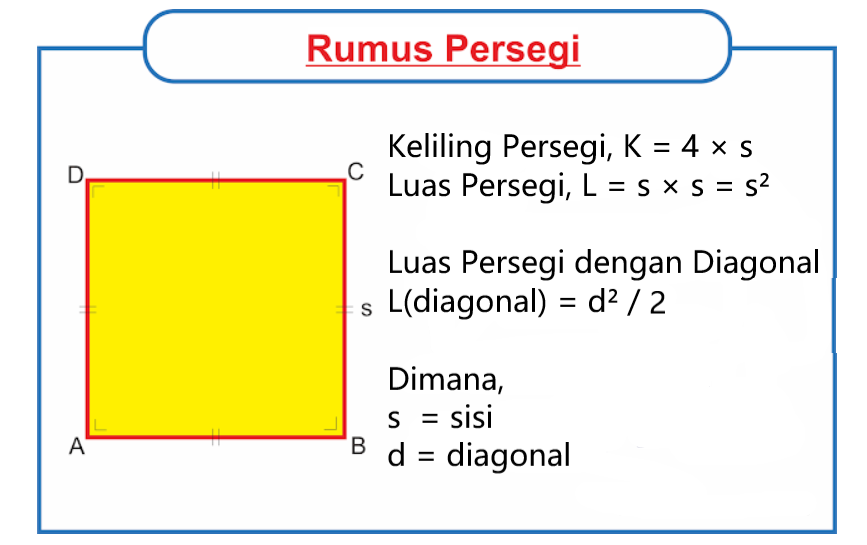

Welcome to Katik!
Haii gurlls Katik ini merupakan alat untuk mempermudah kamu
untuk menghitung luas dan keliling suatu persegi ataupun persegi panjang
Luas Persegi

Contoh :
L = S x S
L = 10 x 10
L = 100
Keliling Persegi
Contoh :
K = 4 x S
K = 4 x 10
K = 40
Luas Persegi Panjang

Contoh :
L = P x L
L = 4 x 10
L = 40
Keliling Persegi Panjang
Contoh :
K = 2 (P + L)
K = 2 (4 + 10)
K = 28